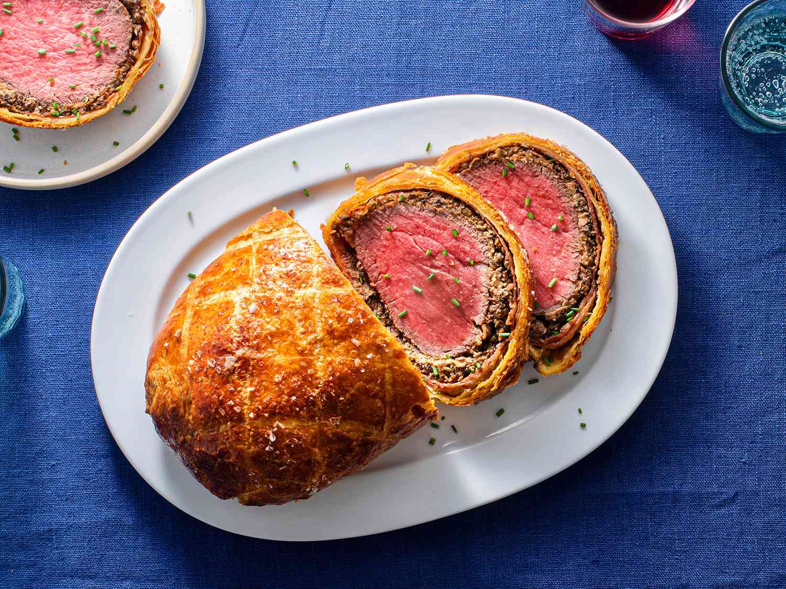

Beef Wellington

Description
Beef Wellington is a classic British dish that features tender beef fillet coated with pâté and wrapped in flaky pastry.
The dish is typically served with a side of roasted vegetables and a rich red wine sauce.
It is a decadent and elegant dish that is perfect for special occasions or a fancy dinner party.
Ingredients
- Beef fillet
- Salt and pepper
- Olive oil
- Prosciutto or Parma ham
- Pâté
- Puff pastry
- Egg wash
Steps
-
Prepare the Beef: Start by trimming the fat and silver skin from a beef tenderloin and season it with salt and pepper. Sear the beef in a hot pan until browned on all sides, then set aside to cool.
-
Prepare the Duxelles: Finely chop mushrooms, shallots, garlic, and thyme in a food processor to make a duxelles. Cook the duxelles in a pan with butter until the liquid has evaporated and it forms a paste. Season with salt and pepper.
-
Assemble the Wellington: Roll out a sheet of puff pastry on a floured surface and spread the duxelles over it, leaving a border around the edges. Place the seared beef in the center and wrap the pastry around it, sealing the edges.
-
Chill the Wellington: Place the Wellington in the refrigerator for at least 30 minutes to allow the pastry to firm up.
-
Brush with Egg Wash: Beat an egg and brush it over the top of the Wellington to give it a golden brown finish.
-
Bake: Preheat the oven to 425°F (220°C) and bake the Wellington for about 35-40 minutes, or until the pastry is golden brown and the beef is cooked to your liking. Let the Wellington rest for 10 minutes before slicing and serving.